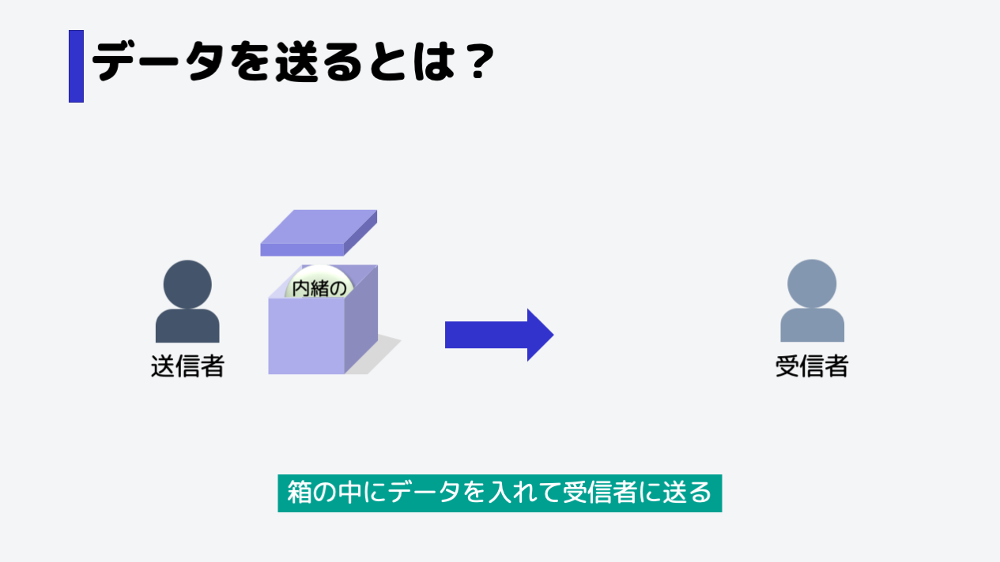
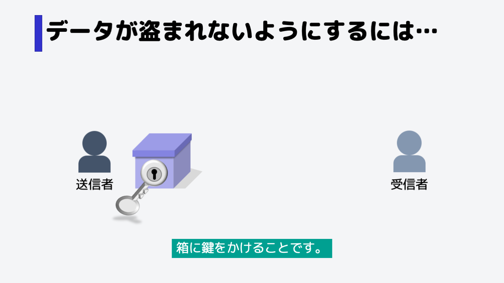

データを送ることの例え話
送信者から受信者にデータを送ることを、箱の中にデータを入れて送るととらえます。
このような送り方だと、途中で箱の中のデータを知らない誰かに盗まれる可能性があります。
データが盗まれないようにするには
箱に鍵をかければよいのです。
家の鍵のように、開閉可能な鍵を用意しておけば、鍵を持っていない人は中を見ることができません。
このとき、鍵をかけてデータを守ることを「暗号化」
暗号化されたデータを元に戻すことを「復号」といいます。
送信者から受信者にデータを送ることを、箱の中にデータを入れて送るととらえます。
このような送り方だと、途中で箱の中のデータを知らない誰かに盗まれる可能性があります。
箱に鍵をかければよいのです。
家の鍵のように、開閉可能な鍵を用意しておけば、鍵を持っていない人は中を見ることができません。
このとき、鍵をかけてデータを守ることを「暗号化」
暗号化されたデータを元に戻すことを「復号」といいます。